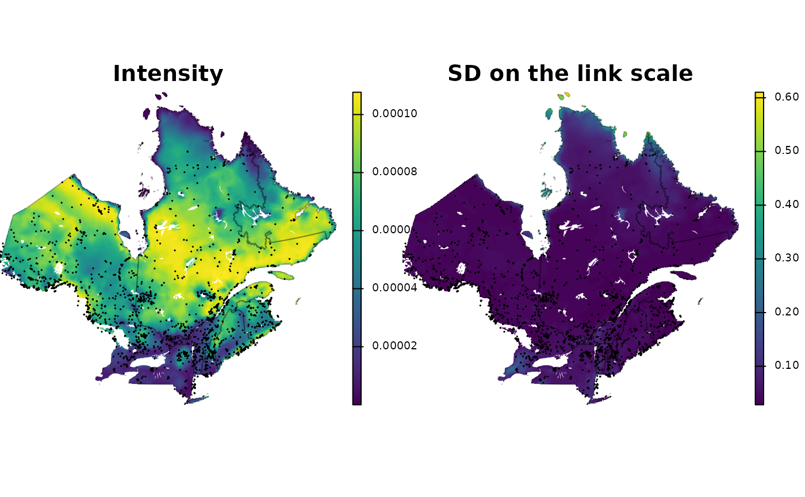

ewlgcpSDM
ewlgcpSDM.RmdIntroduction to ewlgcpSDM
ewlgcpSDM is a package for inferring species distributions from presence-only data using effort-weighted Log-Gaussian Cox point process models.
First, let’s install some useful packages.
library(rgbif)
library(terra)
library(sf)
library(geodata)
library(rmapshaper)
library(INLA)
library(rnaturalearth)
# devtools::load_all('.')
library(ewlgcpSDM)Define study area
We will first download some polygons to define the study area and to help with the mapping later.
# Downloads polygons using package geodata
can <- gadm("CAN", level = 1, path = getwd()) |>
st_as_sf()
usa <- gadm("USA", level = 1, path = getwd()) |>
st_as_sf()
na <- rbind(can, usa)
na <- st_transform(na, 32618)
# keep Québec and bordering provinces/states as a buffer
region <- na[na$NAME_1 %in% c("Québec", "New Brunswick", "Maine", "Vermont",
"New Hampshire", "New York", "Ontario"), ]
# split NF into different polygons
labrador <- ms_explode(na[na$NAME_1 %in% c("Newfoundland and Labrador"),
])
labrador <- labrador[which.max(st_area(labrador)), ] # keep Labarador
region <- rbind(region, labrador)
qc <- ms_simplify(region, 0.01)
# Add it to the study region
region <- rbind(region, labrador)
# Simplify polygons to make things faster
region <- ms_simplify(region, 0.005)
region <- st_union(region) |>
st_as_sf()
# lakes
lakes <- ne_download(scale = "medium", type = "lakes", destdir = getwd(),
category = "physical", returnclass = "sf") |>
st_transform(32618)
#> Reading layer `ne_50m_lakes' from data source
#> `/home/frousseu/Documents/github/ewlgcpSDM/vignettes/ne_50m_lakes.shp'
#> using driver `ESRI Shapefile'
#> Simple feature collection with 412 features and 39 fields
#> Geometry type: POLYGON
#> Dimension: XY
#> Bounding box: xmin: -165.8985 ymin: -50.62002 xmax: 176.0827 ymax: 81.94033
#> Geodetic CRS: WGS 84
lakes <- st_filter(lakes, region)
plotQC <- function() {
# plotting function for the study area
par(mar = c(0, 0, 0, 0))
plot(st_geometry(qc), col = "lemonchiffon2")
plot(st_geometry(region), add = TRUE)
plot(st_geometry(lakes), col = "white", add = TRUE)
}
plotQC()Get observations
We will get observations form GBIF, but first we will provide a
polygon in the WKT format to restrict observations to the study area. We
first need to simplify the polygon for the GBIF API to accept it
(wkt < 1500 characters, unless geom_big is
specified).
wkt <- st_union(st_buffer(region, 20000))
wkt <- ms_simplify(wkt, 0.005)
wkt <- st_transform(wkt, 4326)
wkt <- st_as_text(wkt)
obs <- rgbif::occ_data(scientificName = "Picea mariana", hasCoordinate = TRUE,
limit = 10000, geometry = wkt)$data
rem <- which(obs$coordinateUncertaintyInMeters > 30000) # removes locations with high uncertainty
if (any(rem)) {
obs <- obs[-rem, ]
}
obs <- st_as_sf(as.data.frame(obs), coords = c("decimalLongitude", "decimalLatitude"),
crs = 4326)
obs <- st_transform(obs, st_crs(region))
plotQC()
plot(st_geometry(obs), add = TRUE)Filter observations
To reduce observer effects, we will filter out multiple observations of the species from a single observer in a given location. For this, we will keep a single observation for each observer/cell over a 5 x 5 km grid.
### remove observer/spatial duplicates keeps a single obs per
### observer/cell
bb <- st_bbox(region)
fg <- rast(ext(bb), resolution = 5000)
values(fg) <- 1:ncell(fg)
e <- terra::extract(fg, vect(obs))
dups <- duplicated(data.frame(cell = e[, 2], observer = obs$recordedBy))
table(dups)
#> dups
#> FALSE TRUE
#> 2321 525
obs <- obs[!dups, ]Estimate effort surface
The density of observations will be used as a background to approximate an effort surface. We will use a density raster made of the numbers of observations of plant species within 1 x 1 km cells for all GBIF observations. This raster is hosted by Biodiversite Québec.
gbif <- rast("https://object-arbutus.cloud.computecanada.ca/bq-io/io/gbif_heatmaps/gbif_plants_density_06-2022.tif")
gbif <- crop(gbif, vect(st_buffer(st_transform(region, 4326), 1)))
gbif <- mask(gbif, vect(st_buffer(st_transform(region, 4326), 1)))
gbif <- subst(gbif, NA, 0) # replace NAs with 0
plot(log(aggregate(gbif, 10, fun = sum)), axes = FALSE)
plot(st_geometry(st_transform(st_transform(region, 4326))), add = TRUE)For convenience, instead of directly using the raster, we will simulate an observation dataset using the raster as a density surface.
### Simulate effort surface/background obs from gbif density raster
p <- spatSample(gbif, 50000, as.points = TRUE, method = "weights")
tb <- st_as_sf(p) |>
st_transform(st_crs(region))
tb <- tb[, "geometry"]Finally, we bind the observations and the simulated observations to obtain the background used as an effort surface.
bg <- rbind(obs[, "geometry"], tb)Get predictors
Predictors will be taken from the BON in a Box stac-catalogue. We will first download a subset of predictors and then project them to a common raster with a 2 x 2 km resolution. See https://io.biodiversite-quebec.ca/stac/ for a list of possibilities.
deciduous <- crop(rast("https://object-arbutus.cloud.computecanada.ca/bq-io/io/earthenv/landcover/consensus_full_class_3.tif"),
vect(st_transform(region, 4326)))
crops <- crop(rast("https://object-arbutus.cloud.computecanada.ca/bq-io/io/earthenv/landcover/consensus_full_class_7.tif"),
vect(st_transform(region, 4326)))
maxtemp <- crop(rast("https://object-arbutus.cloud.computecanada.ca/bq-io/io/CHELSA/climatologies/CHELSA_bio5_1981-2010_V.2.1.tif"),
vect(st_transform(region, 4326)))
bb <- st_bbox(region)
predictors <- rast(ext(bb), resolution = 2000, crs = crs(region))
deciduous <- project(deciduous, predictors)
crops <- project(crops, predictors)
maxtemp <- project(maxtemp, predictors)
predictors <- c(deciduous, crops, maxtemp)
names(predictors) <- c("deciduous", "crops", "maxtemp")Prepare for modeling
Build mesh
First, we delineate a non-convex hull around the study area that we will use to create an INLA mesh.
domain <- st_sample(st_buffer(region, 5000), 5000)
domain <- inla.nonconvex.hull(st_coordinates(domain), convex = -0.015,
resolution = 75)We then create the INLA mesh over the study area. We use a coarse resolution for the mesh edges corresponding to approximately 1% of the study area diameter and a relatively large outer area for reducing edge effects. See virgilio for advices on creating a good mesh.
pedge<-0.005
edge<-min(c(diff(st_bbox(region)[c(1,3)])*pedge,diff(st_bbox(region)[c(2,4)])*pedge))
edge
#> [1] 12904.38
mesh <- inla.mesh.2d(loc.domain = NULL,
max.edge = c(edge,edge*3),
min.angle = 21,
cutoff = edge/1,
offset = c(edge,edge*3),
boundary = domain,#inla.mesh.segment(domainloc),
crs = st_crs(region))Create dual mesh
From an INLA mesh, we create a dual mesh. We will add each subsequent
element to the params object which is a list of objects
required for modeling.
# plan(multicore,workers=3)
params <- dmesh_mesh(mesh)Compute weights
This will compute the weight for each cell of the dual mesh (related to area).
params <- dmesh_weights(params, region)Summarize predictors
Next, we will summarize the predictors for each cell of the dual mesh. The values will also be scaled for modeling.
params <- dmesh_predictors(params, predictors)
dm <- params$dmesh
dm$deciduous <- params$predictors$deciduous
plot(dm[, "deciduous"], border = NA, nbreaks = 100, pal = function(x) {
rev(terrain.colors(x))
}, reset = FALSE, key.pos = NULL)
plot(st_geometry(qc), border = adjustcolor("black", 0.25), add = TRUE)
plot(st_geometry(lakes), col = "white", border = adjustcolor("black", 0.25),
add = TRUE)
Summarize observations and effort
Before summarizing observations, we will first create a 500 km buffer around locations outside of which we will add a fictious effort suggesting that the species was not found. This is to avoid predicting high relative abundances in areas where the species is not found. This buffer is optional and these values are arbitrary and can be adapted to specific situations.
buff <- st_buffer(obs, 250000) |>
st_union()
plotQC()
plot(st_geometry(buff), add = TRUE)
plot(st_geometry(obs), add = TRUE)We can then sum for each cell of the dual mesh observations of the species and of the background.
params <- dmesh_effort(params, obs = obs, background = bg, buffer = buff,
adjust = FALSE)
# w <- which((params$effort$nobs == params$effort$nbackground) &
# (params$effort$nobs > 0)) params$effort[w, 2:3] <- params$effort[w,
# 2:3] * 500 hist(params$effort$nobs / params$effort$nbackground,
# breaks = 50)
# w <- which(params$weights == 0) params$effort[w, ] <- 0
# w <- which(params$effort$nbackground > 0) params$effort[w, 2:3] <-
# params$effort[w, 1]
# plot(sdm$mean) plot(st_geometry(params$dmesh),add=T)
# text(st_coordinates(st_centroid(params$dmesh)), label =
# 1:nrow(params$dmesh), cex = 0.5)
# params$effort[c(30, 139),]
# source('https://raw.githubusercontent.com/frousseu/FRutils/refs/heads/master/R/colo.scale.R')
# par(mar=c(0,0,0,0)) plot(st_geometry(params$dmesh), col =
# colo.scale(params$effort$nobs / params$effort$nbackground,
# c('gold', 'forestgreen'))) plot(st_geometry(params$dmesh), col =
# colo.scale(ifelse(params$weights > 0, params$weights, NA),
# c('gold', 'forestgreen'))) plot(st_geometry(region), add = TRUE)
# plot(st_geometry(region), add = TRUE)
# plot(st_geometry(params$dmesh), add = TRUE)
# mapview(region) + mapview(params$dmesh)
# plot(sdm$mean) plot(st_geometry(region), border = 'red', lwd = 1,
# add = T) plot(st_geometry(params$dmeshcuts), border = 'red', add =
# T) plot(mesh, add = T)Run model
The model can now be ran. Here, we will fix the standard deviation of the spatial effect to a very low value which is equivalent to removing the spatial component from the model. The model becomes a simple inhomogeneous point process weighted for effort.
m<-ewlgcp(
formula=y~deciduous+deciduous2+crops+crops2+maxtemp+maxtemp2,
dmesh=params,
effort = TRUE,
adjust = FALSE,
buffer = TRUE,
orthogonal = TRUE,
prior.beta = NULL,
prior.range = c(5000, 0.01),
prior.sigma = c(0.00001, NA),
smooth = 2,
num.threads=2:2,
#blas.num.threads=2,
control.inla=list(
strategy="adaptive", # "adaptive"
int.strategy="eb", # "eb"
huge=FALSE, # apparently ignored
control.vb=list(
enable=TRUE,
verbose=TRUE
)
),# adaptive, eb
inla.mode="experimental",
control.compute=list(config=TRUE,openmp.strategy="pardiso"),
verbose=TRUE,
safe=FALSE
)Map results
The map function will produce an intensity raster along
with the different uncertainty measures and the spatial component.
sdm <- ewlgcpSDM::map(model = m, dmesh = params, dims = c(1500, 1500),
region = region)
#> Warning in fm_crs_bounds(crs, warn.unknown = TRUE): Could not determine shape
#> of transformation bounds. Using infinite rectangle.
sdm <- mask(sdm, vect(region))
crs(sdm) <- crs(region)We can finally map the intensity (sdm) along with the uncertainty on the link scale.
add_shp <- function() {
plot(st_geometry(qc), border = adjustcolor("black", 0.25), add = TRUE)
plot(st_geometry(lakes), col = "white", border = NA, add = TRUE)
plot(st_geometry(obs), cex = 0.1, add = TRUE)
}
plg <- list(size = c(1, 0.5), cex = 0.75, adj = c(10, 10))
par(mfrow = c(1, 2), mar = c(0, 0, 0, 0))
plot(sdm$mean, main = "Intensity", axes = F, plg = plg, mar = c(0, 0, 0,
3))
add_shp()
plot(sdm$linksd, main = "SD on the link scale", axes = F, plg = plg, mar = c(0,
0, 0, 3))
add_shp()
par(mfrow = c(1, 1), mar = c(4, 4, 3, 3))
# plot(exp(sdm$linkmean-sdm$spacemean))
# plot(mask(exp(sdm$linkmean-sdm$spacemean), vect(region)))
# plot(sdm$spacemean) plot(sdm$mean)
# source('https://raw.githubusercontent.com/frousseu/FRutils/refs/heads/master/R/colo.scale.R')
# par(mfrow = c(1, 2), mar=c(0,0,0,0)) plot(sdm$spacemean, mar = c(0,
# 0, 0, 0)) plot(st_geometry(region), add = TRUE) rat <-
# params$effort$nobs / params$effort$nbackground rat <- ifelse(rat ==
# 0, NA, rat) plot(st_geometry(params$dmesh), border = NA, col =
# colo.scale(rat, c('gold', 'forestgreen')))
# plot(st_geometry(region), add = TRUE)
# e <- extract(sdm$mean, params$dmesh, fun = mean, na.rm = T)
# plot(e[, 2], params$effort$nobs / params$effort$nbackground)
# r2 <- sdm$mean r2 <- exp(sdm$linkmean-sdm$spacemean) plot(c(r1,
# r2), range = range(global(c(r1, r2), 'range', na.rm = T)), mar =
# c(0, 0, 0, 7)) plot(r2-r1, col =
# colo.scale(sort(unique(values(r2-r1)[,1])),
# c('blue','white','red'), center = TRUE))